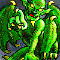
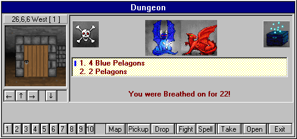

"Let he who ventures into the mines know that without skills, death is certain, and with skills, riches are vast and never-ending -
but death will still hover over you."
- "Maxx", Master of the Villain's Guild
Haven of monsters, treasure, and the unknown, the old Mines are usually made up of rooms and corridors. As a character walks through a door into a new room (or "territory"), they will often encounter a group of monsters - unless you or somebody else has recently been through and has already killed them. The dungeon will repopulate over a time, so a room that was empty on the way down might have monsters in it on your way back up...

In the above picture, you can see a group of monsters with a treasure chest currently engaged in combat.
The box above the Maze that reads '7,4,1 North [1]' contains the character's current location (x,y,level), direction, and the number of characters in the room (in brackets).. If there are ever dead characters in the room, a number will appear (representing the number of dead characters in the room) with a '+' in front of it in the same location (e.g. [1+1]). If you ever stumble over a dead body and don't know who it is, simply use the 'look in room' command (see Commands for more information). If your character (or party) ever becomes lost, you may lose the x,y,lev and direction information until your character (or party) finds out where they are.
The arrow keys underneath the maze represent Left, Forward, Right and Turn Around for movement. Along the bottom of the window are other command buttons. These commands are the same as hitting the associated key (i.e. the Fight command is the same as hitting 'f' during combat). The number keys represent an item/spell buffer. Clicking on one of these numbers will activate the associated buffer. You may use either the keyboard or this command window to carry out any dungeon commands. For commands that are not available in the command window, use the associated key.
For an overview of Game and Dungeon Commands, please see Commands at the end of this Helplesson
Knowing the Dungeon
There are several neat features and nasty traps that you can encounter in the dungeon. Below is a known list of them:
Stairs
Go either up or down (surprise!). Be aware that the deeper you go, the tougher the monsters.
Teleporter
These can either take you to a specific place (only way to find out is to take them more than once) on the same level or on another level; or they can take you to a random place on the same level. Unlike the teleport spell, teleporters will not cause you to land in rock. If a party of characters runs into a random teleporter, each character in the party will be teleported to a different location on the same level.
Pits
You will take hits if you fall into them. Pits become more dangerous as you go deeper into the dungeon. Levitation will allow you to hover over a pit, although levitation has a small chance of failing.
Chute
Basically like a pit except that you will be on a different level below you if you fall down it. You cannot crawl back up a chute. Unless you are levitating, you will take damage when you fall down a chute. If a character is levitating, they have the option of using the chute just like taking the stairs.
Fog/Darkness
Prevents you from seeing the maze. You must 'feel' your way around. Sometimes the Fog/Darkness will be so thick that it might be hard for you to identify monsters within it. Intelligence and Wisdom help.
Rock
A square that is solid rock. The only way to enter a square that is solid rock is with a teleport or portal spell, and if you do so, you will die. To get out, you must be summoned out of rock by another character with a spell. Once clear of the rock, you will need to be resurrected.
Rotator
Will turn you in a random direction and cause you to become disoriented, and sometimes lost as well. There are also squares that will face you in a predetermined direction all the time.
Water
Water will cause you to drown if you are wearing heavy items and are not levitating. Certain types of monsters will appear only in water.
Anti-Magic
Will not allow the character to cast spells. Other spells already cast (i.e. Resist Magic) will stay intact.
Quicksand
This stuff is bad news. You take hits and can lose items if you are not levitating.
Extinguish
These squares will have the same effect as Anti-Magic but will also take away any spells previously cast on your character (e.g. Resist Magic).
Stud
In general, these squares will contain tougher monsters, usually from one level deeper than the current level.
There are also some squares that are a combination of the squares that were previously described.
To take either Stairs, or a Chute (only when levitating), select the Take option (by either pressing 't' or clicking on the Take command in the Main Dungeon Window).
Some rooms will quite often contain tougher or easier monsters. Learn to recognize these rooms; your character's life may depend on it.
Characters with a high perception ability are usually able to detect a difference in the maze when walking around. If the character is high enough level and has a good enough perception ability, they may even be able to completely identify the square they are standing on.
Rumor also has it that secret doors exist within the dungeon. One can check a wall for a secret door by attempting to pass through it. If a secret door is there, the character will be allowed through the wall.
In general, the dungeon becomes nastier as you go deeper. If you get teleported and can't find where you are, remain cool, grab some graph paper and start mapping away until you find yourself and the AutoMap kicks back in.
Move to the next section to read about the AutoMap.
Move to the previous section to see Spells for the Villain.
M1: "The Depths of Dejenol" is a Trademark of Decklin's Domain Ltd and is © Copyright 1994-2026 All Rights Reserved